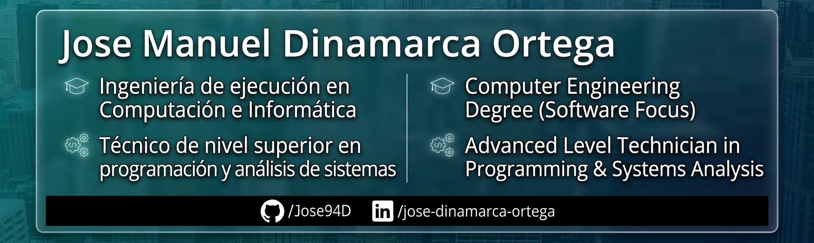

Soy Ingeniero en Computación e Informática y Técnico en Programación. Mi enfoque profesional está centrado en el Desarrollo Backend / Full Stack y la Ingeniería de Datos.
Cuento con una sólida base teórica y práctica en el diseño de arquitecturas de software, seguridad, bases de datos relacionales y metodologías ágiles (Certificación Scrum). Además, mi experiencia como Docente Especialista en TI y Programación me ha permitido desarrollar habilidades avanzadas en: Code Review y Refactorización, Documentación Técnica, Resolución de Problemas.
Busco integrarme en equipos dinámicos y entornos remotos que desafíen mis capacidades de desarrollo y optimización de código.
Un vistazo a los proyectos en los que estoy trabajando actualmente.
Desarrollando una API REST escalable con arquitectura de microservicios para la gestión de inventarios.
Ver repositorio en GitHubAutomatizando la extracción y transformación de datos web (ETL) para análisis de negocio en tiempo real.
Ver repositorio en GitHubCreando una plataforma para el control y automatización de hardware aplicado a la electrónica casera.
Ver repositorio en GitHub